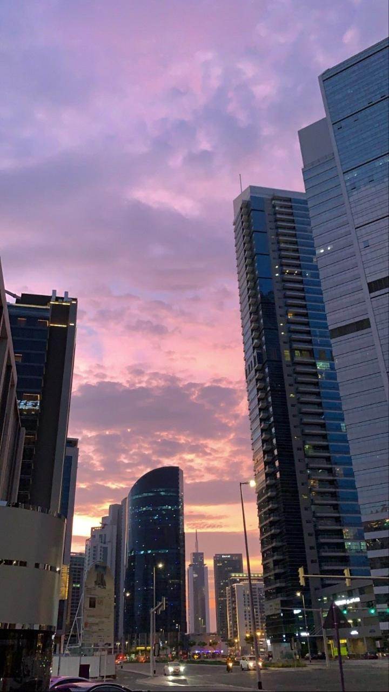
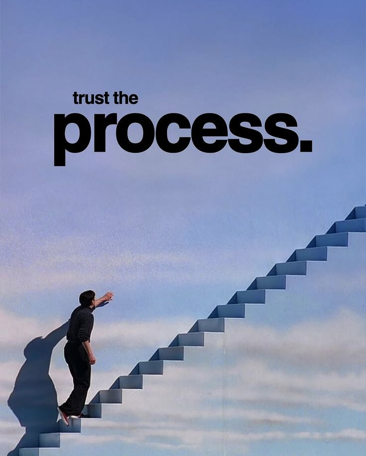
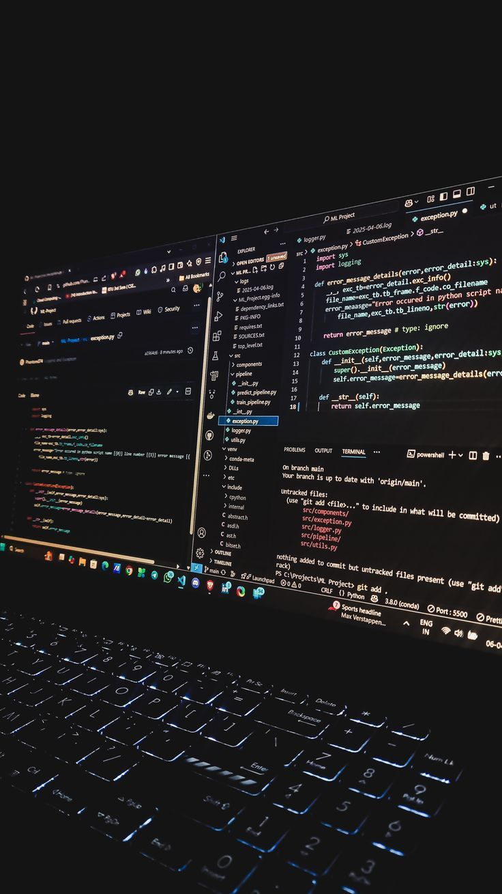

Como automatizei processos repetitivos com Python e AutoIt
Como construí RPAs que eliminaram horas de trabalho manual — da captura de tela à integração com GLPI e Microsoft 365.
Sou Yan Matheus, bacharel em Engenharia de Computação com experiência em suporte técnico, administração de infraestrutura de TI e automação de processos.
Atuo com Python, TypeScript, Windows Server, Linux, redes e integrações corporativas para construir soluções mais estáveis, eficientes e fáceis de operar.




Como construí RPAs que eliminaram horas de trabalho manual — da captura de tela à integração com GLPI e Microsoft 365.
Lições práticas de gerenciar servidores Linux em produção — segurança, monitoramento e boas práticas aprendidas da maneira difícil.
Como conectei o GLPI ao Microsoft 365 para automatizar fluxos de atendimento e gerar relatórios de tickets diretamente por e-mail.
Configuração e troubleshooting de DHCP e DNS em ambientes Windows Server, com exemplos reais e armadilhas comuns a evitar.
Se voce precisa organizar processos, integrar sistemas ou melhorar sua operacao, posso ajudar a desenhar e executar a solucao.